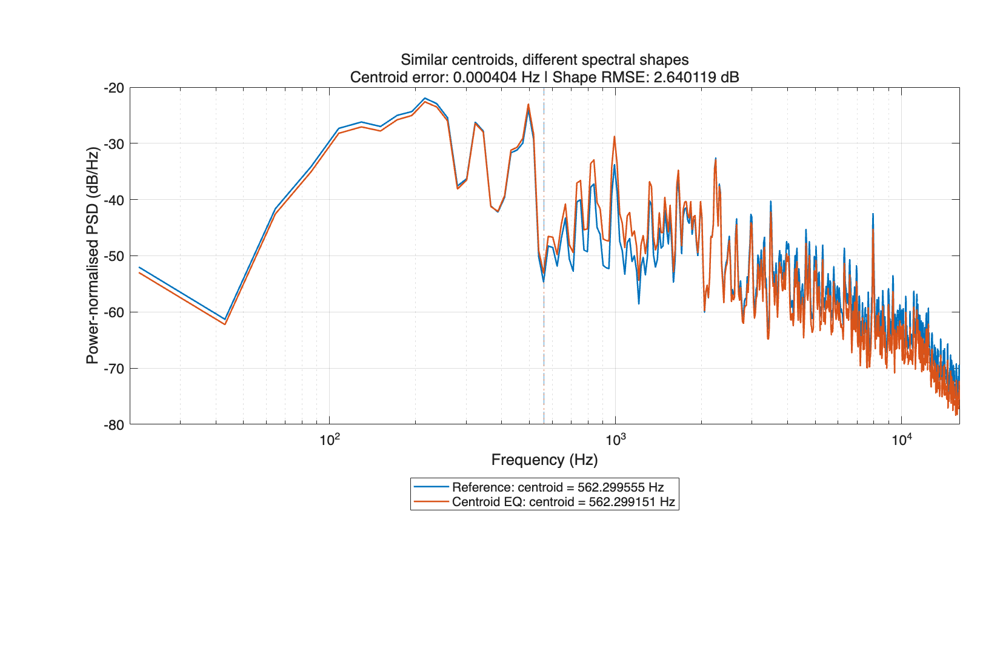
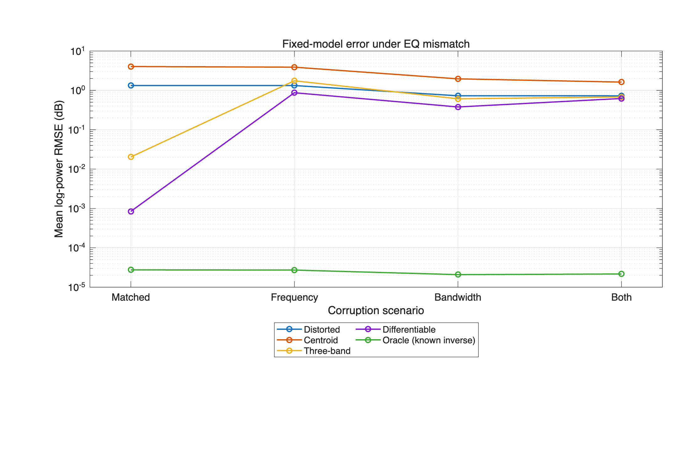

Spectral centroid
Match one power spectral centroid by searching the gain of a 2500 Hz high shelf.
Final project · Yishu Zhang · 540995787
Interpretable versus differentiable automatic equalisation
View the codeThe comparison
Every correction method receives the same distorted signal and its clean reference. The controlled filters use low-shelf, peaking and high-shelf sections at 250, 1000 and 2500 Hz.
This is an offline, reference-based restoration study. Method C fits three gains with automatic differentiation; it does not train a neural network across recordings.
Match one power spectral centroid by searching the gain of a 2500 Hz high shelf.
Adjust three gains using low-, mid- and high-band power errors.
Fit three bounded gains to the detailed log-power spectrum with Adam.
Recorded results
Across the 240 matched-model test pairs, B and C reduce spectral errors more consistently. The centroid method also recovers matching high-shelf distortions very accurately, so the result depends on the corruption and the available processor.
| Method | Centroid / Hz | Raw RMSE / dB | Shape RMSE / dB |
|---|---|---|---|
| Distorted input | 163.159985 | 3.167138 | 3.361678 |
| A · Centroid | 7.882010 | 4.549816 | 3.685349 |
| B · Three-band | 0.742357 | 0.017420 | 0.016942 |
| C · Differentiable | 0.329024 | 0.001708 | 0.005018 |

clip_005_mid_boost. Centroid error is approximately 0.000404 Hz while power-level-controlled shape RMSE is approximately 2.640119 dB. This is a selected example, not an average result.
Confidence intervals use 2000 bootstrap samples of the six performer clusters. Spectral metrics and power matching do not establish perceived sound quality; a controlled listening test was not performed.
Listening examples
These five files use the first pilot excerpt and its controlled −6 dB peaking distortion at 1000 Hz. They illustrate the processors used in the study.
Reference
Distorted input · mid-frequency cut
A · Centroid correction
B · Three-band correction
C · Differentiable correction
Reproduce the work
data/ and results/.run('run_project_demo.m'), or use Run All in the matching Live Script.reproduce_results(false).The default demonstration computes the pilot corrections and reads saved formal results. Full reproduction fits the formal experiments again. Omitted output WAVs can also be rebuilt from saved gains for inspection without claiming a new fit.
Read the complete setup and run instructionsReport PDF: Read the final research report.
Demonstration video: Watch the recorded demonstration (4 min 43 s, MP4).
Research and source data
The supplied excerpts and EQ examples are derived from GuitarSet's mono microphone recordings. Mono conversion, DC removal, excerpt selection, scaling and EQ processing are documented in the repository. Full academic references.